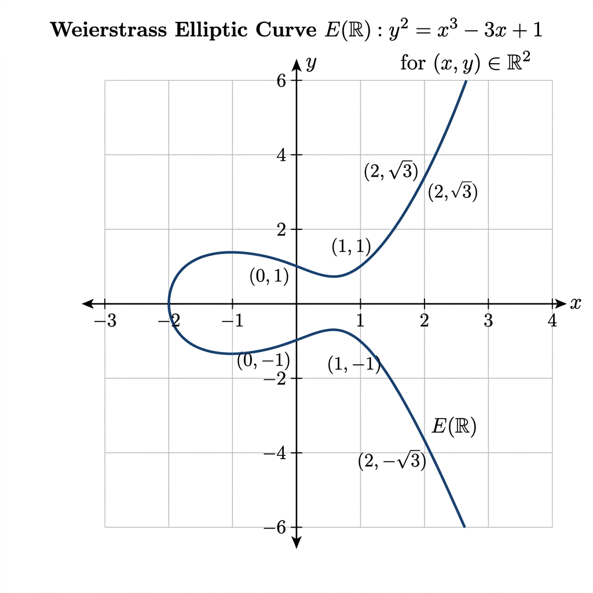

Weierstrass Curve Invariants

Mathematical Exposition
In arithmetic geometry, a Weierstrass curve $E$ over a commutative ring $R$ is defined by the affine equation:
$$y^2 + a_1 xy + a_3 y = x^3 + a_2 x^2 + a_4 x + a_6$$where $a_1, a_2, a_3, a_4, a_6 \in R$. Under coordinate transformations, several quantities are invariant. We define the basic $b$-invariants:
$$b_2 = a_1^2 + 4a_2, \quad b_4 = a_1 a_3 + 2a_4, \quad b_6 = a_3^2 + 4a_6$$ $$b_8 = a_1^2 a_6 + 4a_2 a_6 - a_1 a_3 a_4 + a_2 a_3^2 - a_4^2$$From these, the key $c$-invariants are constructed:
$$c_4 = b_2^2 - 24b_4, \quad c_6 = -b_2^3 + 36b_2 b_4 - 216b_6$$The discriminant $\Delta$ of the curve is defined as:
$$\Delta = -b_2^2 b_8 - 8b_4^3 - 27b_6^2 + 9b_2 b_4 b_6$$These quantities satisfy the fundamental relation $1728 \Delta = c_4^3 - c_6^2$. When the discriminant $\Delta$ is invertible in $R$, the curve is smooth (elliptic), and its $j$-invariant is defined as $j = c_4^3 / \Delta$. In Lean, this is represented using the unit $\Delta' \in R^\times$ such that $\Delta = \Delta'$, so $j = (\Delta')^{-1} \cdot c_4^3$.
Unit and Nilpotency equivalences
The theorem isUnit_j_iff_isUnit_c4 establishes that the $j$-invariant is a unit in $R$ if and only if $c_4$ is a unit in $R$. This is proved by exploiting the invertible factor $(\Delta')^{-1}$:
- If $c_4$ is a unit, then since $(\Delta')^{-1}$ is a unit, their product $j = (\Delta')^{-1} \cdot c_4^3$ is also a unit.
- If $j$ is a unit, multiplying by $\Delta'$ shows that $c_4^3$ is a unit. In any commutative ring, if a power $x^n$ is a unit, then $x$ itself must be a unit since $x \cdot (x^{n-1} (x^n)^{-1}) = 1$.
Similarly, the nilpotency characterization isNilpotent_j_iff_isNilpotent_c4 shows that $j$ is nilpotent if and only if $c_4$ is nilpotent, which holds because multiplying by a unit preserves nilpotency, and $x^n$ is nilpotent iff $x$ is nilpotent.
Characteristic 2 and 3 Simplifications
Over fields or rings of specific characteristics, the equations simplify significantly:
- Characteristic 2: The invariant $c_4$ reduces to $a_1^4$. Thus, $j$ is a unit (resp. nilpotent) if and only if $a_1$ is a unit (resp. nilpotent).
- Characteristic 3: The invariant $c_4$ reduces to $b_2^2$. Thus, $j$ is a unit (resp. nilpotent) if and only if $b_2$ is a unit (resp. nilpotent).
import Mathlib
/-!
# Weierstrass Curve Invariant Characterizations
This file provides characterizations of the `j`-invariant and related quantities
(`c₄`, `c₆`, `twoTorsionPolynomial.disc`) for Weierstrass curves over commutative rings,
in terms of unit and nilpotency conditions.
## Main results
* `isUnit_j_iff_isUnit_c4` : `j` is a unit iff `c₄` is a unit.
* `isUnit_j_sub_1728_iff_isUnit_c6` : `j - 1728` is a unit iff `c₆` is a unit.
* `isUnit_j_iff_isUnit_a1_of_char_two` : In characteristic 2, `j` is a unit iff `a₁` is a unit.
* `isUnit_j_iff_isUnit_b2_of_char_three` : In characteristic 3, `j` is a unit iff `b₂` is a unit.
* `isNilpotent_j_iff_isNilpotent_c4` : `j` is nilpotent iff `c₄` is nilpotent.
* `isNilpotent_j_sub_1728_iff_isNilpotent_c6` : `j - 1728` is nilpotent iff `c₆` is nilpotent.
* `isElliptic_of_baseChange_isElliptic_of_isUnit_descends` : Descent of ellipticity along
base change when units descend.
-/
private lemma isNilpotent_unit_inv_mul_pow_iff {R : Type u} [CommRing R]
(u : Rˣ) (y : R) {k : ℕ} (hk : k ≠ 0) :
IsNilpotent ((↑u⁻¹ : R) * y ^ k) ↔ IsNilpotent y := by
rw [(Units.isUnit u⁻¹).isNilpotent_unit_mul_of_commute_iff (Commute.all _ _)]
exact IsNilpotent.pow_iff_pos hk
private lemma unit_cancel_mul {R : Type u} [CommRing R] (W : WeierstrassCurve R) [W.IsElliptic] (x : R) :
W.Δ * (↑W.Δ'⁻¹ * x) = x := by
change ↑W.Δ' * (↑W.Δ'⁻¹ * x) = x
rw [← mul_assoc, Units.mul_inv, one_mul]
private lemma isUnit_of_isUnit_Δ_inv_mul_pow {R : Type u} [CommRing R] (W : WeierstrassCurve R) [W.IsElliptic] {x : R} {k : ℕ}
(h : IsUnit (↑W.Δ'⁻¹ * x ^ k)) (hk : k ≠ 0) : IsUnit x := by
have h1 := IsUnit.mul W.isUnit_Δ h
rw [unit_cancel_mul W (x ^ k)] at h1
exact (isUnit_pow_iff hk).mp h1
/-- If the discriminant of the 2-torsion polynomial is a unit, then 2 is a unit. -/
theorem isUnit_two_of_isUnit_twoTorsionPolynomial_disc {R : Type u} [CommRing R] (W : WeierstrassCurve R)
(h : IsUnit W.twoTorsionPolynomial.disc) : IsUnit (2 : R) := by
rw [WeierstrassCurve.twoTorsionPolynomial_disc] at h
have hdvd : 2 ∣ 16 * W.Δ := ⟨8 * W.Δ, by ring⟩
exact isUnit_of_dvd_unit hdvd h
/-- In characteristic 2, the `j`-invariant is a unit if and only if `a₁` is a unit. -/
theorem isUnit_j_iff_isUnit_a1_of_char_two {R : Type u} [CommRing R] [CharP R 2] (W : WeierstrassCurve R) [W.IsElliptic] :
IsUnit W.j ↔ IsUnit W.a₁ := by
rw [WeierstrassCurve.j_of_char_two W]
constructor
· exact fun h => isUnit_of_isUnit_Δ_inv_mul_pow W h (by norm_num)
· exact fun h => IsUnit.mul (Units.isUnit W.Δ'⁻¹) (IsUnit.pow 12 h)
/-- In characteristic 3, the `j`-invariant is a unit if and only if `b₂` is a unit. -/
theorem isUnit_j_iff_isUnit_b2_of_char_three {R : Type u} [CommRing R] [CharP R 3] (W : WeierstrassCurve R) [W.IsElliptic] :
IsUnit W.j ↔ IsUnit W.b₂ := by
rw [WeierstrassCurve.j_of_char_three W]
constructor
· exact fun h => isUnit_of_isUnit_Δ_inv_mul_pow W h (by norm_num)
· exact fun h => IsUnit.mul (Units.isUnit W.Δ'⁻¹) (IsUnit.pow 6 h)
/-- The `j`-invariant is a unit if and only if `c₄` is a unit.
See also `isNilpotent_j_iff_isNilpotent_c4` for the nilpotent analogue. -/
theorem isUnit_j_iff_isUnit_c4 {R : Type u} [CommRing R] (W : WeierstrassCurve R) [W.IsElliptic] :
IsUnit W.j ↔ IsUnit W.c₄ := by
rw [WeierstrassCurve.j]
constructor
· exact fun h => isUnit_of_isUnit_Δ_inv_mul_pow W h (by norm_num)
· exact fun h => IsUnit.mul (Units.isUnit W.Δ'⁻¹) (IsUnit.pow 3 h)
/-- The difference between the j-invariant and 1728 is proportional to the square of c₆. -/
theorem j_sub_1728_eq {R : Type u} [CommRing R] (W : WeierstrassCurve R) [W.IsElliptic] :
W.j - 1728 = ↑W.Δ'⁻¹ * W.c₆ ^ 2 := by
have hc_rel : W.c₄ ^ 3 = 1728 * W.Δ + W.c₆ ^ 2 := by
linear_combination -W.c_relation
have h_unit : (↑W.Δ'⁻¹ : R) * W.Δ = 1 := W.isUnit_Δ.unit.inv_val
rw [WeierstrassCurve.j, hc_rel]
linear_combination (1728 : R) * h_unit
/-- `j - 1728` is a unit if and only if `c₆` is a unit.
See also `isNilpotent_j_sub_1728_iff_isNilpotent_c6` for the nilpotent analogue. -/
theorem isUnit_j_sub_1728_iff_isUnit_c6 {R : Type u} [CommRing R] (W : WeierstrassCurve R) [W.IsElliptic] :
IsUnit (W.j - 1728) ↔ IsUnit W.c₆ := by
rw [j_sub_1728_eq]
constructor
· exact fun h => isUnit_of_isUnit_Δ_inv_mul_pow W h (by norm_num)
· exact fun h => IsUnit.mul (Units.isUnit W.Δ'⁻¹) (IsUnit.pow 2 h)
/-- The `j`-invariant is nilpotent if and only if `c₄` is nilpotent.
See also `isUnit_j_iff_isUnit_c4` for the unit analogue. -/
theorem isNilpotent_j_iff_isNilpotent_c4 {R : Type u} [CommRing R] (W : WeierstrassCurve R) [W.IsElliptic] :
IsNilpotent W.j ↔ IsNilpotent W.c₄ := by
rw [WeierstrassCurve.j]
exact isNilpotent_unit_inv_mul_pow_iff W.Δ' W.c₄ (by norm_num)
/-- An elliptic curve over an extension descends to an elliptic curve over the base
if units descend along the algebra map. -/
theorem isElliptic_of_baseChange_isElliptic_of_isUnit_descends
{R A : Type u} [CommRing R] [CommRing A] [Algebra R A]
(h_descends : ∀ x : R, IsUnit (algebraMap R A x) → IsUnit x)
(W : WeierstrassCurve R) [h : (W.baseChange A).IsElliptic] : W.IsElliptic := by
constructor
have h_delta : IsUnit ((W.baseChange A).Δ) := h.1
rw [WeierstrassCurve.map_Δ] at h_delta
exact h_descends W.Δ h_delta
/-- `j - 1728` is nilpotent if and only if `c₆` is nilpotent.
See also `isUnit_j_sub_1728_iff_isUnit_c6` for the unit analogue. -/
theorem isNilpotent_j_sub_1728_iff_isNilpotent_c6 {R : Type u} [CommRing R] (W : WeierstrassCurve R) [W.IsElliptic] :
IsNilpotent (W.j - 1728) ↔ IsNilpotent W.c₆ := by
rw [j_sub_1728_eq]
exact isNilpotent_unit_inv_mul_pow_iff W.Δ' W.c₆ (by norm_num)
/-- In characteristic 2, the `j`-invariant is nilpotent if and only if `a₁` is nilpotent.
See also `isUnit_j_iff_isUnit_a1_of_char_two` for the unit analogue. -/
theorem isNilpotent_j_iff_isNilpotent_a1_of_char_two {R : Type u} [CommRing R] [CharP R 2] (W : WeierstrassCurve R) [W.IsElliptic] :
IsNilpotent W.j ↔ IsNilpotent W.a₁ := by
rw [WeierstrassCurve.j_of_char_two W]
exact isNilpotent_unit_inv_mul_pow_iff W.Δ' W.a₁ (by norm_num)
/-- In characteristic 3, the `j`-invariant is nilpotent if and only if `b₂` is nilpotent.
See also `isUnit_j_iff_isUnit_b2_of_char_three` for the unit analogue. -/
theorem isNilpotent_j_iff_isNilpotent_b2_of_char_three {R : Type u} [CommRing R] [CharP R 3] (W : WeierstrassCurve R) [W.IsElliptic] :
IsNilpotent W.j ↔ IsNilpotent W.b₂ := by
rw [WeierstrassCurve.j_of_char_three W]
exact isNilpotent_unit_inv_mul_pow_iff W.Δ' W.b₂ (by norm_num)
/-- In characteristic 2, `c₄` is a unit if and only if `a₁` is a unit. -/
theorem isUnit_c4_iff_isUnit_a1_of_char_two {R : Type u} [CommRing R] [CharP R 2] (W : WeierstrassCurve R) :
IsUnit W.c₄ ↔ IsUnit W.a₁ := by
rw [WeierstrassCurve.c₄_of_char_two W]
exact isUnit_pow_iff (by norm_num)
/-- In characteristic 3, `c₄` is a unit if and only if `b₂` is a unit. -/
theorem isUnit_c4_iff_isUnit_b2_of_char_three {R : Type u} [CommRing R] [CharP R 3] (W : WeierstrassCurve R) :
IsUnit W.c₄ ↔ IsUnit W.b₂ := by
rw [WeierstrassCurve.c₄_of_char_three W]
exact isUnit_pow_iff (by norm_num)
/-- If 2 is a unit, then the discriminant of the 2-torsion polynomial is a unit. -/
theorem isUnit_twoTorsionPolynomial_disc_of_isUnit_two {R : Type u} [CommRing R] (W : WeierstrassCurve R) [W.IsElliptic] (h : IsUnit (2 : R)) :
IsUnit W.twoTorsionPolynomial.disc := by
rw [WeierstrassCurve.twoTorsionPolynomial_disc]
exact IsUnit.mul (by exact_mod_cast h.pow 4) W.isUnit_Δ
/-- Nilpotency of the `j`-invariant is preserved under base change. -/
theorem isNilpotent_j_of_baseChange {R A : Type u} [CommRing R] [CommRing A] [Algebra R A] (W : WeierstrassCurve R) [W.IsElliptic] (h : IsNilpotent W.j) :
IsNilpotent ((W.baseChange A).j) := by
rw [WeierstrassCurve.map_j]
exact IsNilpotent.map h (algebraMap R A)
/-- Properties of Weierstrass curve invariants. -/
theorem j_eq_1728_iff' {R : Type u} [CommRing R] (W : WeierstrassCurve R) [W.IsElliptic] :
W.j = 1728 ↔ W.c₆ ^ 2 = 0 := by
have h := j_sub_1728_eq W
constructor
· intro hj
rw [hj, sub_self] at h
have h_unit := unit_cancel_mul W (W.c₆ ^ 2)
rw [← h, mul_zero] at h_unit
exact h_unit.symm
· intro hc
rw [hc, mul_zero] at h
linear_combination h
/-- The discriminant of a zero curve is zero. -/
theorem delta_eq_zero_of_zero_curve {R : Type u} [CommRing R] :
(⟨0, 0, 0, 0, 0⟩ : WeierstrassCurve R).Δ = 0 := by
simp only [WeierstrassCurve.Δ, WeierstrassCurve.b₂, WeierstrassCurve.b₄, WeierstrassCurve.b₆, WeierstrassCurve.b₈]
ring
/-- In characteristic 3, if j is zero, then the discriminant is b₄ cubed. -/
theorem delta_eq_b4_cubed_of_j_eq_zero_of_char_three {R : Type u} [CommRing R] [CharP R 3] [IsReduced R]
(W : WeierstrassCurve R) [W.IsElliptic] (h : W.j = 0) : W.Δ = W.b₄ ^ 3 := by
have hb2 : W.b₂ = 0 := (WeierstrassCurve.j_eq_zero_iff_of_char_three W).mp h
have hΔ : W.Δ = -W.b₂ ^ 2 * W.b₈ - 8 * W.b₄ ^ 3 := WeierstrassCurve.Δ_of_char_three W
linear_combination hΔ - W.b₈ * W.b₂ * hb2 - 3 * W.b₄ ^ 3 * CharP.cast_eq_zero R 3
/-- In characteristic 2, if j is zero, then the discriminant is a₃ to the fourth power. -/
theorem delta_eq_a3_pow_four_of_j_eq_zero_of_char_two {R : Type u} [CommRing R] [CharP R 2] [IsReduced R]
(W : WeierstrassCurve R) [W.IsElliptic] (h : W.j = 0) : W.Δ = W.a₃ ^ 4 := by
have ha1 : W.a₁ = 0 := (WeierstrassCurve.j_eq_zero_iff_of_char_two W).mp h
have hΔ : W.Δ = W.a₁ ^ 4 * W.b₈ + W.a₃ ^ 4 + W.a₁ ^ 3 * W.a₃ ^ 3 := WeierstrassCurve.Δ_of_char_two W
rw [ha1] at hΔ
linear_combination hΔ
/-- The product of the j-invariant and the discriminant equals c₄ cubed. -/
theorem j_mul_delta_eq_c4_cubed {R : Type u} [CommRing R] (W : WeierstrassCurve R) [W.IsElliptic] :
W.j * W.Δ = W.c₄ ^ 3 := by
rw [WeierstrassCurve.j]
change (↑W.Δ'⁻¹ : R) * W.c₄ ^ 3 * ↑W.Δ' = W.c₄ ^ 3
rw [mul_right_comm, Units.inv_mul, one_mul]
/-- The discriminant of the 2-torsion polynomial is zero if and only if the curve discriminant is zero. -/
theorem twoTorsionPolynomial_disc_eq_zero_iff_delta_eq_zero {R : Type u} [CommRing R] [NoZeroDivisors R]
(W : WeierstrassCurve R) (h2 : (2 : R) ≠ 0) : W.twoTorsionPolynomial.disc = 0 ↔ W.Δ = 0 := by
rw [WeierstrassCurve.twoTorsionPolynomial_disc]
have h16 : (16 : R) ≠ 0 := by
have h16_eq : (16 : R) = 2 ^ 4 := by norm_num
rw [h16_eq]
exact pow_ne_zero 4 h2
exact mul_eq_zero.trans (or_iff_right h16)
/-- The discriminant of a short Weierstrass curve. -/
theorem delta_of_short_weierstrass {R : Type u} [CommRing R] (a₄ a₆ : R) :
(⟨0, 0, 0, a₄, a₆⟩ : WeierstrassCurve R).Δ = -64 * a₄ ^ 3 - 432 * a₆ ^ 2 := by
simp only [WeierstrassCurve.Δ, WeierstrassCurve.b₂, WeierstrassCurve.b₄, WeierstrassCurve.b₆, WeierstrassCurve.b₈]
ring
/-- The c₄ invariant of a short Weierstrass curve. -/
theorem c4_of_short_weierstrass {R : Type u} [CommRing R] (a₄ a₆ : R) :
(⟨0, 0, 0, a₄, a₆⟩ : WeierstrassCurve R).c₄ = -48 * a₄ := by
simp only [WeierstrassCurve.c₄, WeierstrassCurve.b₂, WeierstrassCurve.b₄]
ring
/-- If a₁, a₂, a₃, a₄ are all zero, then the j-invariant is zero. -/
theorem j_eq_zero_of_a1_a2_a3_a4_eq_zero {R : Type u} [CommRing R] (W : WeierstrassCurve W)[W.IsElliptic]
(h1 : W.a₁ = 0) (h2 : W.a₂ = 0) (h3 : W.a₃ = 0) (h4 : W.a₄ = 0) :
W.j = 0 := by
apply (WeierstrassCurve.j_eq_zero_iff' W).mpr
have h_c4 : W.c₄ = 0 := by
simp only [WeierstrassCurve.c₄, WeierstrassCurve.b₂, WeierstrassCurve.b₄]
rw [h1, h2, h3, h4]
ring
rw [h_c4]
ring
/-- If a₁, a₂, a₄ are all zero, then the j-invariant is zero. -/
theorem j_eq_zero_of_a1_a2_a4_eq_zero {R : Type u} [CommRing R] (W : WeierstrassCurve R) [W.IsElliptic]
(h1 : W.a₁ = 0) (h2 : W.a₂ = 0) (h4 : W.a₄ = 0) :
W.j = 0 := by
apply (WeierstrassCurve.j_eq_zero_iff' W).mpr
have h_c4 : W.c₄ = 0 := by
simp only [WeierstrassCurve.c₄, WeierstrassCurve.b₂, WeierstrassCurve.b₄]
rw [h1, h2, h4]
ring
rw [h_c4]
ring
/-- The product of the j-invariant and the 2-torsion polynomial discriminant is 16 times c₄ cubed. -/
theorem j_mul_twoTorsionPolynomial_disc_eq_sixteen_mul_c4_cubed {R : Type u} [CommRing R] (W : WeierstrassCurve R) [W.IsElliptic] :
W.j * W.twoTorsionPolynomial.disc = 16 * W.c₄ ^ 3 := by
rw [WeierstrassCurve.twoTorsionPolynomial_disc, ← j_mul_delta_eq_c4_cubed W]
ring
/-- For a reduced ring, the j-invariant is 1728 if and only if c₆ is zero. -/
theorem j_eq_1728_iff {R : Type u} [CommRing R] (W : WeierstrassCurve R) [W.IsElliptic] [IsReduced R] :
W.j = 1728 ↔ W.c₆ = 0 := by
rw [j_eq_1728_iff']
exact IsReduced.pow_eq_zero_iff (by decide)
/-- The discriminant when a₂, a₄, a₆ are zero. -/
theorem delta_of_a2_a4_a6_eq_zero {R : Type u} [CommRing R] (a₁ a₃ : R) :
(⟨a₁, 0, a₃, 0, 0⟩ : WeierstrassCurve R).Δ = a₁ ^ 3 * a₃ ^ 3 - 27 * a₃ ^ 4 := by
simp only [WeierstrassCurve.Δ, WeierstrassCurve.b₂, WeierstrassCurve.b₄, WeierstrassCurve.b₆, WeierstrassCurve.b₈]
ring
/-- Two curves with the same c₄ and discriminant have the same j-invariant. -/
theorem j_eq_of_c4_eq_of_delta_eq {R : Type u} [CommRing R] (W₁ W₂ : WeierstrassCurve R) [W₁.IsElliptic] [W₂.IsElliptic]
(hc4 : W₁.c₄ = W₂.c₄) (hΔ : W₁.Δ' = W₂.Δ') :
W₁.j = W₂.j := by
rw [WeierstrassCurve.j, WeierstrassCurve.j, hc4, hΔ]
/-- The discriminant of the 2-torsion polynomial commutes with base change. -/
theorem map_twoTorsionPolynomial_disc {R A : Type u} [CommRing R] [CommRing A] (φ : R →+* A) (W : WeierstrassCurve R) :
(W.map φ).twoTorsionPolynomial.disc = φ W.twoTorsionPolynomial.disc := by
simp only [WeierstrassCurve.twoTorsionPolynomial_disc, WeierstrassCurve.map_Δ, map_mul, map_ofNat]
/-- The j-invariant of a short Weierstrass curve. -/
theorem j_of_short_weierstrass (R : Type u) [CommRing R] (a₄ a₆ : R) [(⟨0, 0, 0, a₄, a₆⟩ : WeierstrassCurve R).IsElliptic] :
(⟨0, 0, 0, a₄, a₆⟩ : WeierstrassCurve R).j = ↑(⟨0, 0, 0, a₄, a₆⟩ : WeierstrassCurve R).Δ'⁻¹ * (-48 * a₄) ^ 3 := by
rw [WeierstrassCurve.j]
have hc4 : (⟨0, 0, 0, a₄, a₆⟩ : WeierstrassCurve R).c₄ = -48 * a₄ := by
simp only [WeierstrassCurve.c₄, WeierstrassCurve.b₂, WeierstrassCurve.b₄]
ring
rw [hc4]
/-- The difference between c₄ cubed and c₆ squared is 108 times the 2-torsion polynomial discriminant. -/
theorem c4_cubed_sub_c6_sq_eq_108_mul_twoTorsionPolynomial_disc {R : Type u} [CommRing R] (W : WeierstrassCurve R) :
W.c₄ ^ 3 - W.c₆ ^ 2 = 108 * W.twoTorsionPolynomial.disc := by
rw [WeierstrassCurve.twoTorsionPolynomial_disc]
linear_combination -(WeierstrassCurve.c_relation W)
/-- c₆ squared is the product of j - 1728 and the discriminant. -/
theorem c6_sq_eq_j_sub_1728_mul_delta {R : Type u} [CommRing R] (W : WeierstrassCurve R) [W.IsElliptic] :
W.c₆ ^ 2 = (W.j - 1728) * W.Δ := by
have h_unit : (↑W.Δ'⁻¹ : R) * W.Δ = 1 := by
change (↑W.Δ'⁻¹ : R) * ↑W.Δ' = 1
rw [Units.inv_mul]
rw [WeierstrassCurve.j]
linear_combination WeierstrassCurve.c_relation W - W.c₄ ^ 3 * h_unit
/-- The product of j - 1728 and the 2-torsion polynomial discriminant is 16 times c₆ squared. -/
theorem j_sub_1728_mul_twoTorsionPolynomial_disc_eq_16_mul_c6_sq {R : Type u} [CommRing R] (W : WeierstrassCurve R) [W.IsElliptic] :
(W.j - 1728) * W.twoTorsionPolynomial.disc = 16 * W.c₆ ^ 2 := by
rw [WeierstrassCurve.twoTorsionPolynomial_disc]
linear_combination 16 * (c6_sq_eq_j_sub_1728_mul_delta W).symm
/-- The discriminant of an elliptic curve is non-zero. -/
theorem delta_ne_zero_of_isElliptic {R : Type u} [CommRing R] [Nontrivial R] (W : WeierstrassCurve R) [W.IsElliptic] :
W.Δ ≠ 0 := by
exact W.isUnit_Δ.ne_zero
/-- In characteristic 3, the discriminant of the 2-torsion polynomial is non-zero. -/
theorem twoTorsionPolynomial_disc_ne_zero_of_char_three {R : Type u} [CommRing R] [Nontrivial R] [CharP R 3] (W : WeierstrassCurve R) [W.IsElliptic] :
W.twoTorsionPolynomial.disc ≠ 0 := by
rw [WeierstrassCurve.twoTorsionPolynomial_disc_of_char_three W]
exact W.isUnit_Δ.ne_zero
/-- The discriminant in terms of the b invariants. -/
theorem delta_eq_neg_b8_mul_b2_sq_sub_8_b4_cubed_sub_27_b6_sq_add_9_b2_b4_b6 {R : Type u} [CommRing R] (W : WeierstrassCurve R) :
W.Δ + W.b₂ ^ 2 * W.b₈ + 8 * W.b₄ ^ 3 + 27 * W.b₆ ^ 2 = 9 * W.b₂ * W.b₄ * W.b₆ := by
simp only [WeierstrassCurve.Δ, WeierstrassCurve.b₂, WeierstrassCurve.b₄, WeierstrassCurve.b₆, WeierstrassCurve.b₈]
ring
/-- In characteristic 3, b₂ and b₄ cannot both be zero for an elliptic curve. -/
theorem b2_and_b4_not_both_zero_of_char_three {R : Type u} [CommRing R] [CharP R 3] (W : WeierstrassCurve R) [W.IsElliptic] :
¬ (W.b₂ = 0 ∧ W.b₄ = 0) := by
rintro ⟨hb2, hb4⟩
haveI : Nontrivial R := CharP.nontrivial_of_char_ne_one (by decide : 3 ≠ 1)
have hΔ : W.Δ = 0 := by
rw [WeierstrassCurve.Δ_of_char_three W, hb2, hb4]
ring
exact W.isUnit_Δ.ne_zero hΔ
/-- The c₆ invariant when a₁ and a₃ are zero. -/
theorem c6_of_a1_a3_eq_zero {R : Type u} [CommRing R] (W : WeierstrassCurve R)
(h1 : W.a₁ = 0) (h3 : W.a₃ = 0) :
W.c₆ = -64 * W.a₂ ^ 3 + 288 * W.a₂ * W.a₄ - 864 * W.a₆ := by
simp only [WeierstrassCurve.c₆, WeierstrassCurve.b₂, WeierstrassCurve.b₄, WeierstrassCurve.b₆]
rw [h1, h3]
ring
/-- The c₄ invariant when a₁ and a₃ are zero. -/
theorem c4_eq_sixteen_mul_a2_sq_sub_forty_eight_mul_a4_of_a1_a3_eq_zero {R : Type u} [CommRing R] (W : WeierstrassCurve R)
(h1 : W.a₁ = 0) (h3 : W.a₃ = 0) :
W.c₄ = 16 * W.a₂ ^ 2 - 48 * W.a₄ := by
simp only [WeierstrassCurve.c₄, WeierstrassCurve.b₂, WeierstrassCurve.b₄]
rw [h1, h3]
ring
/-- In characteristic 2, a₁ and a₃ cannot both be zero for an elliptic curve. -/
theorem a1_and_a3_not_both_zero_of_char_two {R : Type u} [CommRing R] [CharP R 2] (W : WeierstrassCurve R) [W.IsElliptic] :
¬ (W.a₁ = 0 ∧ W.a₃ = 0) := by
rintro ⟨h1, h3⟩
haveI : Nontrivial R := CharP.nontrivial_of_char_ne_one (by decide : 2 ≠ 1)
have hΔ : W.Δ = 0 := by
rw [WeierstrassCurve.Δ_of_char_two W, h1, h3]
ring
exact W.isUnit_Δ.ne_zero hΔ